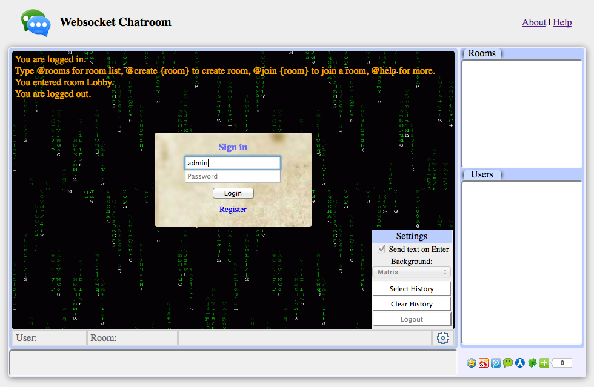

User Interface Introduction
The user interface includes (see Fig. 1):
- The chatroom screen with black background is at the center.
- The status bar under the chatroom screen shows current user, room,
any instant information, and a Settings button.
- The textbox to enter texts is under the chatroom.
- Upper right is Rooms panel, which shows all current active rooms.
- Lower right is Users and Room Users panel.
Users panel shows all logged in users.
Room Users panel shows all users in the current room.

Figure 1. Chatroom screenshot.
Register
A user needs to provide a username and a password to register.
Login
A user needs to provide a username and a password to log in.
Update Password
A user can update password when he logs in, and enter command '#passwd'.
This will bring up the update-password panel.
Logout
There are two ways to log out:
1) A user logs out by enter command: #logout, #exit or #x.
2) A second way is to go to "Setting" at the bottom right corner of chatroom, and click on button "logout".
Chatroom commands
All the commands have a shortcut name and a full name.
Commands available to all the users:
- #c {room} - #create, create and join a new room
- #e - #erase, erase chatroom content
- #gc - #g chess, #game chess, open 6-piece chess game window
- #g1 - #g on, #game on, same as #game chess
- #g0 - #g off, #game off, close game window
- #h - #?, #help, show help
- #hm - #help master, show help for room master
- #i {user} - #invite, invite a user into current room
- #j {room} - #join, join an existing room
- #l - #leave, leave a room
- #o - #who, list room users
- #p - #passwd, update password
- #r - #rooms, list rooms
- #u - #users, list logged in users
- #w - #where, show current room name
- #x - #exit, #logout, logout
Commands available only to room master:
- #b - #public, set room as public
- #k {user} - #kick, kick a user out of current room
- #m {size} - #max, set room max size. 0 or negative means no limit.
- #t {user} - #master, assign another room user as master. There is only one room master at a time.
- #v - #private, set room as private. Only invited user can enter a private room.
Settings
The settings panel can be opened by moving mouse over the settings icon at bottom right
corner of the chatroom. The choices include:
- Send on Enter - if checked, the message is sent when the user presses Enter key;
otherwise, a "Send Message" button should be clicked to send a message.
The first way sends one line at a time. The second way can send multiple lines at a time.
- Set background image.
- Select History - select all chatroom contents.
This is useful when the user wants to copy and paste the chatroom contents.
- Clear History - clear chatroom contents.
- Logout - logout from chatroom.
Other Use Tips
- When "Send on Enter" in Settings is checked, another way to send multiple lines at a time is:
Press Shift key at the same time of pressing Enter, this avoids sending text.
- Press the up arrow key can display the last input, press the down arrow key to recover to current input.
- Double click on a room name in the room panel can enter the room.
 Websocket Chatroom Help
Websocket Chatroom Help